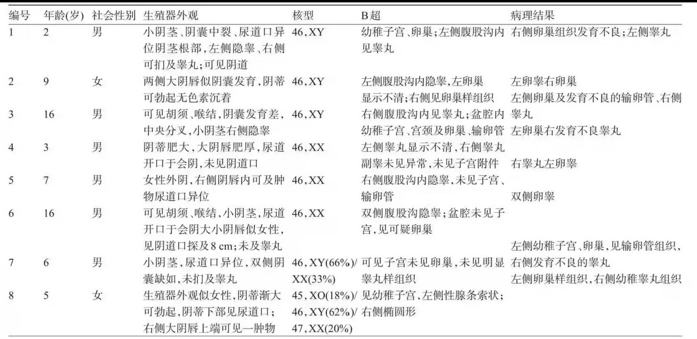

猫屎bot
@wind_dmr
@Vazytol @nonsweetsuger 生物学上 不管是染色体还是外观 也从来都不是只有两种性别

万紫铜（Vazytol）
@Vazytol
@nonsweetsuger 可是染色体和外观已经注定了，生物学上就这样两种的呀🤔要说的话：很多时候社会上的压力迫使你必须二选一，不然不选你就得死全家，然后还必须跟你自己染色体对应的性别对得上，然后因为这样其实也不咋样没啥大伤害，后面就这样懵懵懂懂的活着了。